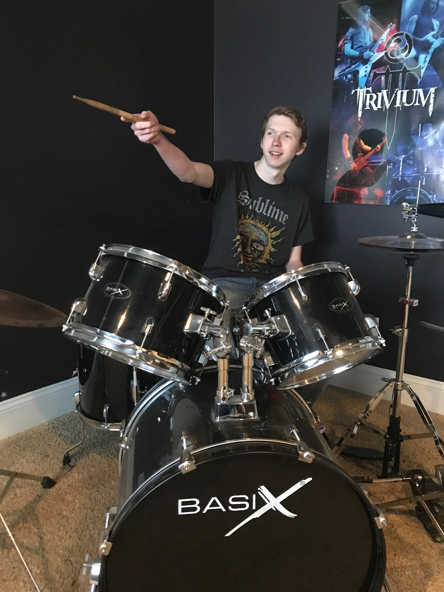

I've had a strong passion for designing, programming, and machining for most of my life. Most nights, I'm either on Satisfactory or sketching out my next design or program while my 3D printer works through a build in the background. When friends come by, I'd rather be behind my drum set, where a quick jam usually turns into a full session.
Back in high school, I did freelance graphic design — living in Illustrator and Photoshop, obsessing over how things look. Then I got into engineering, obsessing over how things work. Machining ended up being the perfect middleground: it's still design, still precision, still making something from nothing — just in metal instead of pixels.